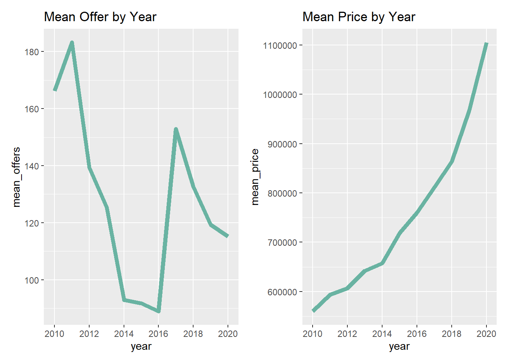
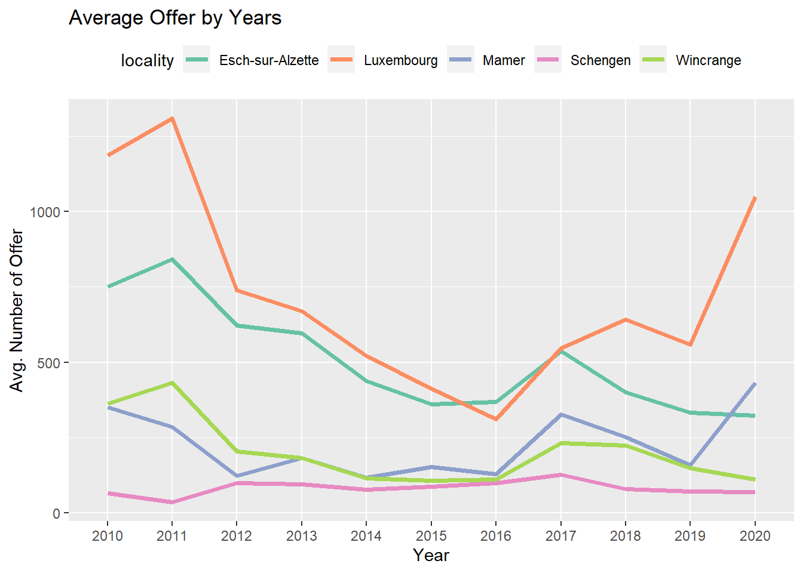
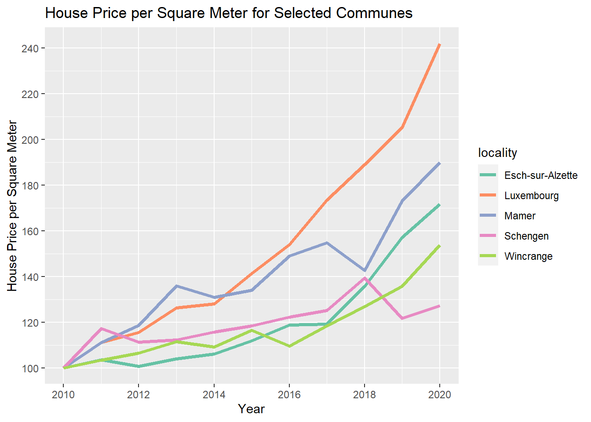
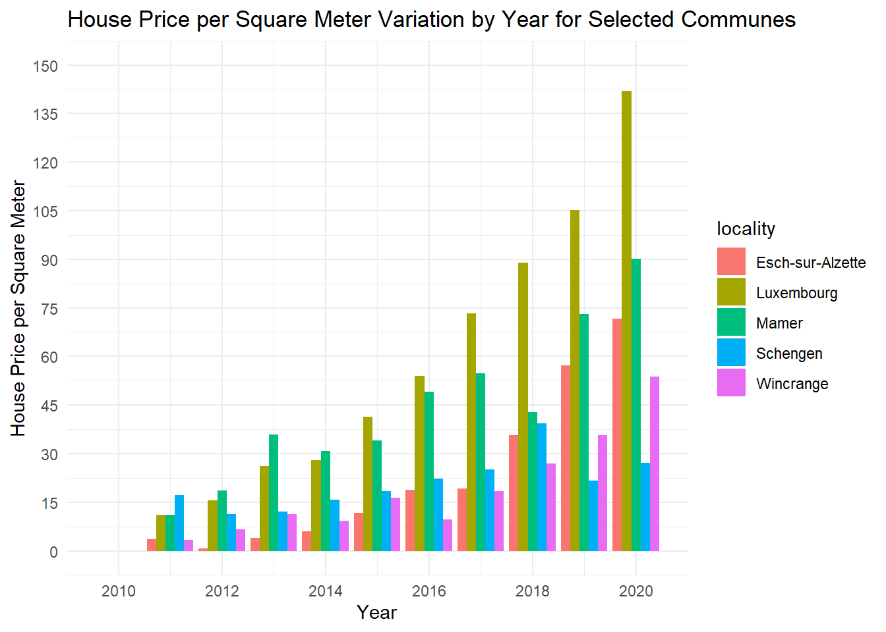

Quarto enables you to weave together content and executable code into a finished document. To learn more about Quarto see https://quarto.org.
Housing in Luxembourg
We are going to download data about house prices in Luxembourg. Luxembourg is a little Western European country the author hails from that looks like a shoe and is about the size of .98 Rhode Islands.
In this project our goal is to:
Get data trapped inside an Excel file into a neat data frame;
Convert nominal to real prices using a simple method;
Make some tables and plots and call it a day (for now).
Saving trapped data from Excel
The picture below shows an Excel file made for human consumption:
So why is this file not machine-readable? Here are some issues:
The table does not start in the top-left corner of the spreadsheet, which is where most importing tools expect it to be;
The spreadsheet starts with a header that contains an image and some text;
Numbers are text and use “,” as the thousands separator;
You don’t see it in the screenshot, but each year is in a separate sheet.
So first, let’s load some packages:
library(dplyr)
Attaching package: 'dplyr'
The following objects are masked from 'package:stats':
filter, lag
The following objects are masked from 'package:base':
intersect, setdiff, setequal, union
But there’s a problem: columns that should be of type numeric are of type character instead (average_price_nominal_euros and average_price_m2_nominal_euros). There’s also another issue, which you would eventually catch as you’ll explore the data: the naming of the communes is not consistent. Let’s take a look:
Warning: There were 2 warnings in `mutate()`.
The first warning was:
ℹ In argument: `across(starts_with("average"), as.numeric)`.
Caused by warning:
! Zorlamadan dolayı ortaya çıkan NAs
ℹ Run `dplyr::last_dplyr_warnings()` to see the 1 remaining warning.
Now this is interesting – converting the average columns to numeric resulted in some NA values. Let’s see what happened:
# A tibble: 290 × 5
year locality n_offers average_price_nomina…¹ average_price_m2_nom…²
<chr> <chr> <dbl> <dbl> <dbl>
1 2010 Consthum 29 NA NA
2 2010 Esch-sur-Sûre 7 NA NA
3 2010 Heiderscheid 29 NA NA
4 2010 Hoscheid 26 NA NA
5 2010 Saeul 14 NA NA
6 2010 <NA> NA NA NA
7 2010 <NA> NA NA NA
8 2010 Total d'offres 19278 NA NA
9 2010 <NA> NA NA NA
10 2010 Source : Minist… NA NA NA
# ℹ 280 more rows
# ℹ abbreviated names: ¹average_price_nominal_euros,
# ²average_price_m2_nominal_euros
It turns out that there are no prices for certain communes, but that we also have some rows with garbage in there. Let’s go back to the raw data to see what this is about:
So it turns out that there are some rows that we need to remove. We can start by removing rows where locality is missing. Then we have a row where locality is equal to “Total d’offres”.
Now the data looks clean, and we can start the actual analysis… or can we? Before proceeding, it would be nice to make sure that we got every commune in there. For this, we need a list of communes from Luxembourg. Thankfully, Wikipedia has such a list6.
We see many communes that are in our commune_level_data, but not in current_communes. There’s one obvious reason: differences in spelling, for example, “Kaerjeng” in our data, but “Käerjeng” in the table from Wikipedia.
Here again, we can use a list from Wikipedia, and here again, I decide to re-host it on Github pages to avoid problems in the future:
# A tibble: 20 × 3
name year_dissolved reason
<chr> <int> <chr>
1 Bascharage 2011 merged to form Käerjeng
2 Boevange-sur-Attert 2018 merged to form Helperknapp
3 Burmerange 2011 merged into Schengen
4 Clemency 2011 merged to form Käerjeng
5 Consthum 2011 merged to form Parc Hosingen
6 Ermsdorf 2011 merged to form Vallée de l'Ernz
7 Eschweiler 2015 merged into Wiltz
8 Heiderscheid 2011 merged into Esch-sur-Sûre
9 Heinerscheid 2011 merged into Clervaux
10 Hobscheid 2018 merged to form Habscht
11 Hoscheid 2011 merged to form Parc Hosingen
12 Hosingen 2011 merged to form Parc Hosingen
13 Mompach 2018 merged to form Rosport-Mompach
14 Medernach 2011 merged to form Vallée de l'Ernz
15 Munshausen 2011 merged into Clervaux
16 Neunhausen 2011 merged into Esch-sur-Sûre
17 Rosport 2018 merged to form Rosport-Mompach
18 Septfontaines 2018 merged to form Habscht
19 Tuntange 2018 merged to form Helperknapp
20 Wellenstein 2011 merged into Schengen
As you can see, since 2010 many communes have merged to form new ones. We can now combine the list of current and former communes, as well as harmonise their names:
communes <-unique(c(former_communes$name, current_communes$commune))# we need to rename some communes# Different spelling of these communes between wikipedia and the datacommunes[which(communes =="Clemency")] <-"Clémency"communes[which(communes =="Redange")] <-"Redange-sur-Attert"communes[which(communes =="Erpeldange-sur-Sûre")] <-"Erpeldange"communes[which(communes =="Luxembourg City")] <-"Luxembourg"communes[which(communes =="Käerjeng")] <-"Kaerjeng"communes[which(communes =="Petange")] <-"Pétange"
Great! When we compare the communes that are in our data with every commune that has existed since 2010, we don’t have any commune that is unaccounted for.
year locality n_offers
Length:1171 Length:1171 Min. : 0.0
Class :character Class :character 1st Qu.: 50.0
Mode :character Mode :character Median : 90.0
Mean : 128.9
3rd Qu.: 149.0
Max. :1309.0
average_price_nominal_euros average_price_m2_nominal_euros
Min. : 364182 Min. :2287
1st Qu.: 559297 1st Qu.:3184
Median : 673376 Median :3692
Mean : 735978 Mean :3941
3rd Qu.: 838204 3rd Qu.:4438
Max. :2010937 Max. :9528
NA's :129 NA's :129
Analysing the data
library(ggplot2)# Kutu grafiği ile yıl bazında ortalama fiyatlarggplot(data = commune_level_data, aes(x = year, y = average_price_nominal_euros, fill=year)) +geom_boxplot() +labs(title ="Box Plot of Average Price by Year", x ="Year", y ="Average Price (€)")
In year-based box plots, you can identify how the distribution of average prices changed over different years. For this example, it can be seen that average price increases steadily during years.
library(patchwork) # To display 2 charts together
Warning: package 'patchwork' was built under R version 4.3.2
library(hrbrthemes)
Warning: package 'hrbrthemes' was built under R version 4.3.2
NOTE: Either Arial Narrow or Roboto Condensed fonts are required to use these themes.
Please use hrbrthemes::import_roboto_condensed() to install Roboto Condensed and
if Arial Narrow is not on your system, please see https://bit.ly/arialnarrow
mean_data<- commune_level_data %>%group_by(year) %>%summarise(mean_offers =mean(n_offers, na.rm =TRUE),mean_price=mean(average_price_nominal_euros, na.rm = T)) #mean_data# Most basic line chartp1 <-ggplot(mean_data, aes(x=year, y=mean_offers, group=1)) +geom_line(color="#69b3a2", size=2) +ggtitle("Temperature: range 1-10") +ggtitle("Mean Offer by Year")+scale_x_discrete(breaks =c(2010,2012,2014,2016,2018,2020))
Warning: Using `size` aesthetic for lines was deprecated in ggplot2 3.4.0.
ℹ Please use `linewidth` instead.
p2 <-ggplot(mean_data, aes(x=year, y=mean_price, group=1)) +geom_line(color="#69b3a2",size=2) +ggtitle("Price: range 1-100") +ggtitle("Mean Price by Year") +scale_x_discrete(breaks =c(2010,2012,2014,2016,2018,2020))# Display both charts side by side thanks to the patchwork packagep1 + p2

According to the graphs, while the average price increased continuously over the years, the average offer decreased in 2014 and 2016.
`summarise()` has grouped output by 'year'. You can override using the
`.groups` argument.
top_localities<- top_localities %>%filter(locality %in%c("Luxembourg","Esch-sur-Alzette","Mamer","Schengen","Wincrange"))#top_localitiesggplot(data = top_localities, aes(x = year, y = mean_offers, group=locality, color = locality)) +geom_line(size =1.3) +labs(title ="Average Offer by Years", x ="Year", y ="Avg. Number of Offer") +scale_color_brewer(palette ="Set2") +theme(legend.position ="top")

When the average offers are examined by years, it is seen that the highest offers are in Luxembourg and the lowest offers are in Schengen.
library(dplyr)library(ggplot2)library(purrr)library(tidyr)#Let's load the datasets:commune_level_data <-read.csv("datasets/commune_level_data.csv")country_level_data <-read.csv("datasets/country_level_data.csv")#Let's compute the Laspeyeres index for each commune:commune_level_data <- commune_level_data %>%group_by(locality) %>%mutate(p0 =ifelse(year =="2010", average_price_nominal_euros, NA)) %>%fill(p0, .direction ="down") %>%mutate(p0_m2 =ifelse(year =="2010", average_price_m2_nominal_euros, NA)) %>%fill(p0_m2, .direction ="down") %>%ungroup() %>%mutate(pl = average_price_nominal_euros/p0*100,pl_m2 = average_price_m2_nominal_euros/p0_m2*100)#Let's also compute it for the whole country:country_level_data <- country_level_data %>%mutate(p0 =ifelse(year =="2010", average_price_nominal_euros, NA)) %>%fill(p0, .direction ="down") %>%mutate(p0_m2 =ifelse(year =="2010", average_price_m2_nominal_euros, NA)) %>%fill(p0_m2, .direction ="down") %>%mutate(pl = average_price_nominal_euros/p0*100,pl_m2 = average_price_m2_nominal_euros/p0_m2*100)#Let's compute the rate of cahnge in price on the percentage scale for each commune:commune_level_data <- commune_level_data %>%group_by(locality) %>%mutate(p0 =ifelse(year =="2010", average_price_nominal_euros, NA)) %>%fill(p0, .direction ="down") %>%mutate(p0_m2 =ifelse(year =="2010", average_price_m2_nominal_euros, NA)) %>%fill(p0_m2, .direction ="down") %>%ungroup() %>%mutate(pl_in_perc = ((average_price_nominal_euros-p0)/p0)*100,pl_m2_in_perc = ((average_price_m2_nominal_euros-p0_m2)/p0_m2)*100)#Let's also compute it for the whole country:country_level_data <- country_level_data %>%mutate(p0 =ifelse(year =="2010", average_price_nominal_euros, NA)) %>%fill(p0, .direction ="down") %>%mutate(p0_m2 =ifelse(year =="2010", average_price_m2_nominal_euros, NA)) %>%fill(p0_m2, .direction ="down") %>%mutate(pl_in_perc = ((average_price_nominal_euros-p0)/p0)*100,pl_m2_in_perc = ((average_price_m2_nominal_euros-p0_m2)/p0_m2)*100)
#We are going to create a plot for 5 communes and compare the price evolution in the communes#to the national price evolution. Let's first list the communes:communes <-c("Luxembourg","Esch-sur-Alzette","Mamer","Schengen","Wincrange")filtered_data <- commune_level_data %>%filter(locality %in% communes)# Create the line plotggplot(filtered_data, aes(x = year, y = pl_m2, color = locality, group = locality)) +geom_line(size=1.3) +labs(title ="House Price per Square Meter for Selected Communes",x ="Year",y ="House Price per Square Meter") +scale_color_brewer(palette ="Set2") +# Adjust color palette as neededscale_x_continuous(breaks =seq(2010, 2020, by =2)) +# Set the x-axis breaksscale_y_continuous(breaks =seq(0, 250, by =20)) # Set the x-axis breaks

bar charts all in one graph without subplot
# Create a grouped bar chart for house price per square meter variationggplot(filtered_data, aes(x = year, y = pl_m2_in_perc, fill = locality)) +geom_bar(stat ="identity", position ="dodge") +labs(title ="House Price per Square Meter Variation by Year for Selected Communes",x ="Year",y ="House Price per Square Meter") +scale_x_continuous(breaks =seq(2010, 2020, by =2)) +# Set the x-axis scale_y_continuous(limits =c(0, 150), breaks =seq(0, 150, by =15)) +theme_minimal()

each bar chart in the individual plots
ggplot(filtered_data, aes(x = year, y = pl_m2_in_perc, fill =as.factor(locality))) +geom_bar(stat ="identity", position ="dodge") +facet_grid(locality ~ ., scales ="free_y") +labs(title ="HP per Square Meter % Variation by Year with respect to 2010 prices",x ="Year",y ="House Price per Square Meter variation in % wrt 2010",fill ="Communes"# Change the title for the fill legend ) +scale_x_continuous(breaks =seq(2010, 2020, by =1)) +#scale_y_continuous(limits = c(0, 150), breaks = seq(0, 150, by = 15)) +scale_fill_brewer(palette ="Set2") +# Change color palette, adjust as neededtheme_minimal() +theme(legend.position ="right", panel.spacing =unit(0.5, "lines")) +theme(legend.position ="right",strip.text.y =element_blank()) # Removes the facet strip text